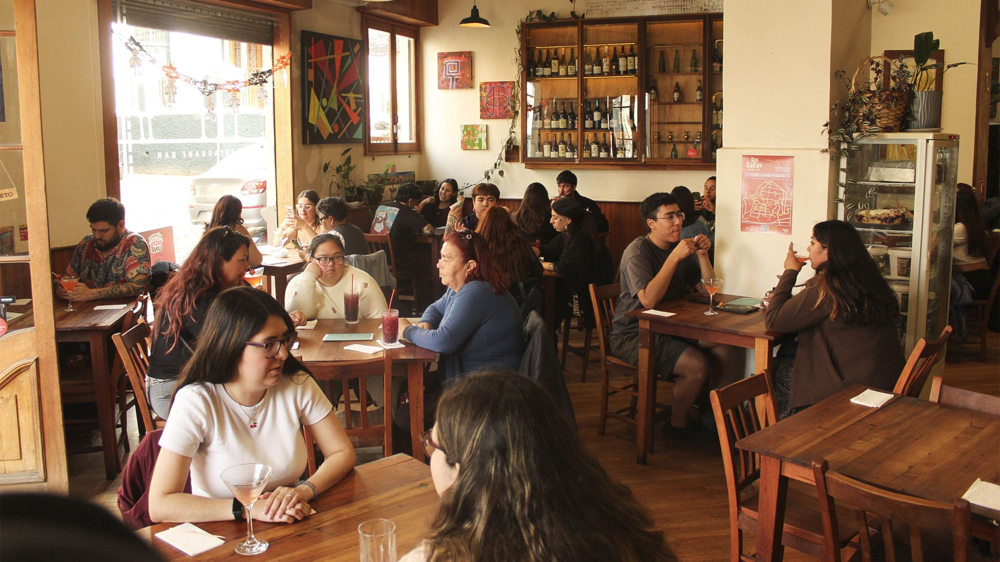
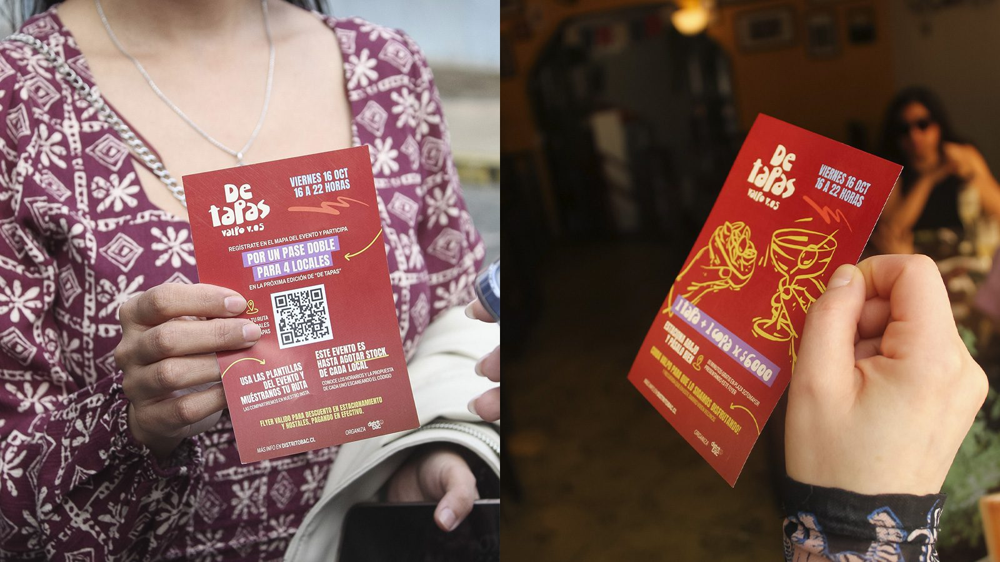

Distrito Valpo
Cada mes, el gremio arma dos rutas gastronómicas por los cerros Alegre y Concepción, como De Tapas y Café de Barrio. El mapa que usaban no decía quién lo usaba ni qué locales visitaba.

Mapa interactivo
Un mapa propio, alojado en el sitio del gremio, con ficha de cada local, botón «Cómo llegar», Instagram y filtros. La visita se confirma cuando la persona está en el local.

Piezas impresas
Cada ruta tiene identidad propia y piezas impresas con código QR para los más de 50 locales participantes; el registro entrega los datos de cada edición.

Emporio Orgánika